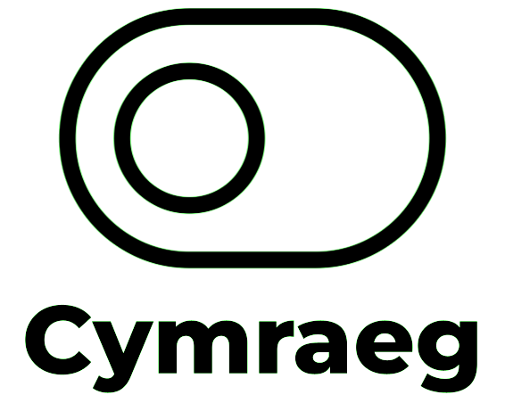
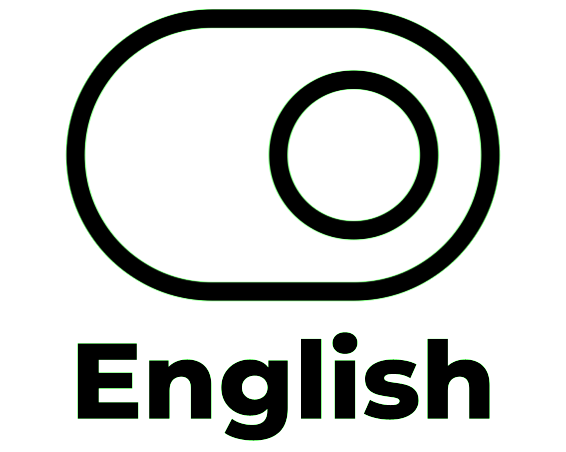

<!DOCTYPE html>
<!--[if lt IE 7]>      <html class="no-js lt-ie9 lt-ie8 lt-ie7"> <![endif]-->
<!--[if IE 7]>         <html class="no-js lt-ie9 lt-ie8"> <![endif]-->
<!--[if IE 8]>         <html class="no-js lt-ie9"> <![endif]-->
<!--[if gt IE 8]>      <html class="no-js"> <!--<![endif]-->
<html>
    <head><title>Mapio Cymru - Wicidata</title>
        <link rel="stylesheet" href="https://d19vzq90twjlae.cloudfront.net/leaflet-0.7.3/leaflet.css" />
        <script src="https://d19vzq90twjlae.cloudfront.net/leaflet-0.7.3/leaflet.js"></script>
        <script src="src/leaflet-search.js"></script>
        <script src="src/leaflet-hash.js"></script>
        <script src="src/local_scripts.js"></script>
        <script src="src/easy-button.css"></script>
        <script src="src/easy-button.js"></script>
        <script src="src/easy-button.d.ts"></script>
        <link rel="shortcut icon" type="image/x-icon" href="favicon.ico">
        <link rel="stylesheet" href="src/leaflet-search.css" />
        <link rel="stylesheet" href="font-awesome-4.7.0/css/font-awesome.min.css">
        <style>
          #map{ position:absolute;top:0;left:0;bottom:0;right:0; }
          .wikidata {
      white-space: nowrap;
      width: auto;
      height: auto;
      background: orange;
      border: 1px solid black;
    }

    .wikidata.q {
      background: black;
      color: orange;
    }
        </style>
      </head>
    <body>
        <div id="map"></div>

        <script>
      
        // initialize the map
        var map = L.map('map').setView([52.2110,-3.8123], 12)
        
        // load a tile layer

        var basemap_0 = L.tileLayer('https://openstreetmap.cymru/osm_tiles/{z}/{x}/{y}.png',
          {
            attribution: 'Tiles by <a href="https://mapio.cymru">(c) OSM Contributors</a>, Data by <a href="https://wikidata.org">Wikidata</a>',
            maxZoom: 18,
            minZoom: 9
          })
          basemap_0.addTo(map);

          
// Declare variables
var sparql_2; // Holds the relevant query
var bounds; // Holds the map extent
//var generateSparqlQuery = function(){};
//var generateschoolsMarkers = function(){};


// Holds the markers
var myIcon = L.icon({
    iconUrl: 'officialname.png',
    iconSize: [95, 95],
    iconAnchor: [22, 94],
    popupAnchor: [24, -95],
    //shadowUrl: 'my-icon-shadow.png',
    //shadowSize: [68, 95],
    //shadowAnchor: [22, 94]
});

var schoolsmk = L.icon({
    iconUrl: 'schools.png',
    iconSize: [95, 95],
    iconAnchor: [22, 94],
    popupAnchor: [24, -95],
    //shadowUrl: 'my-icon-shadow.png',
    //shadowSize: [68, 95],
    //shadowAnchor: [22, 94]
});

var officialnamemk = L.icon({
    iconUrl: 'officialname.png',
    iconSize: [95, 95],
    iconAnchor: [22, 94],
    popupAnchor: [24, -95],
    //shadowUrl: 'my-icon-shadow.png',
    //shadowSize: [68, 95],
    //shadowAnchor: [22, 94]
});

var transportmk = L.icon({
    iconUrl: 'transport.png',
    iconSize: [95, 95],
    iconAnchor: [22, 94],
    popupAnchor: [24, -95],
    //shadowUrl: 'my-icon-shadow.png',
    //shadowSize: [68, 95],
    //shadowAnchor: [22, 94]
});

var medicalmk = L.icon({
    iconUrl: 'medical.png',
    iconSize: [95, 95],
    iconAnchor: [22, 94],
    popupAnchor: [24, -95],
    //shadowUrl: 'my-icon-shadow.png',
    //shadowSize: [68, 95],
    //shadowAnchor: [22, 94]
});

var toiletsmk = L.icon({
    iconUrl: 'toilet.png',
    iconSize: [95, 95],
    iconAnchor: [22, 94],
    popupAnchor: [24, -95],
    //shadowUrl: 'my-icon-shadow.png',
    //shadowSize: [68, 95],
    //shadowAnchor: [22, 94]
});

var GLAMmk = L.icon({
    iconUrl: 'GLAM.png',
    iconSize: [95, 95],
    iconAnchor: [22, 94],
    popupAnchor: [24, -95],
    //shadowUrl: 'my-icon-shadow.png',
    //shadowSize: [68, 95],
    //shadowAnchor: [22, 94]
});

var historicmk = L.icon({
    iconUrl: 'historic.png',
    iconSize: [95, 95],
    iconAnchor: [22, 94],
    popupAnchor: [24, -95],
    //shadowUrl: 'my-icon-shadow.png',
    //shadowSize: [68, 95],
    //shadowAnchor: [22, 94]
});

var prehistoricmk = L.icon({
    iconUrl: 'prehistoric.png',
    iconSize: [95, 95],
    iconAnchor: [22, 94],
    popupAnchor: [24, -95],
    //shadowUrl: 'my-icon-shadow.png',
    //shadowSize: [68, 95],
    //shadowAnchor: [22, 94]
});

var hillsmk = L.icon({
    iconUrl: 'hills.png',
    iconSize: [95, 95],
    iconAnchor: [22, 94],
    popupAnchor: [24, -95],
    //shadowUrl: 'my-icon-shadow.png',
    //shadowSize: [68, 95],
    //shadowAnchor: [22, 94]
});

var beachesmk = L.icon({
    iconUrl: 'beaches.png',
    iconSize: [95, 95],
    iconAnchor: [22, 94],
    popupAnchor: [24, -95],
    //shadowUrl: 'my-icon-shadow.png',
    //shadowSize: [68, 95],
    //shadowAnchor: [22, 94]
});

var cparkmk = L.icon({
    iconUrl: 'cpark.png',
    iconSize: [95, 95],
    iconAnchor: [22, 94],
    popupAnchor: [24, -95],
    //shadowUrl: 'my-icon-shadow.png',
    //shadowSize: [68, 95],
    //shadowAnchor: [22, 94]
});

var lakesmk = L.icon({
    iconUrl: 'lakes.png',
    iconSize: [95, 95],
    iconAnchor: [22, 94],
    popupAnchor: [24, -95],
    //shadowUrl: 'my-icon-shadow.png',
    //shadowSize: [68, 95],
    //shadowAnchor: [22, 94]
});

// CREATE THE OVERLAY LAYERS

// First schools
var schools = L.layerGroup() // it's a schools overlay
var transport = L.layerGroup() // it's a transport overlay
var lang_select = "cy"
var linktext1OSM = "\">Gweld ar OpenStreetMap</a><br /><a href=\""
var linktext2OSM = "\"> Gweld ar Wikidata </a></span>"

// ADD a language button
var stateChangingButton = L.easyButton({
    states: [{
        stateName: 'English',
            icon:      '',    
            title:     'Switch to English',
            onClick: function(btn, map) {
             //   map.setView([42.3748204,-71.1161913],16);
                btn.state('Cymraeg');
                lang_select = "en";
                linktext1OSM = "\">Edit on OpenStreetMap</a><br /><a href=\""
                linktext2OSM = "\"> Edit on Wikidata </a></span>"


            }
        }, {
            stateName: 'Cymraeg',        // name the state
            icon:      '',               // and define its properties
            title:     'Switch to Welsh',      // like its title
            onClick: function(btn, map) {       // and its callback
               // map.setView([46.25,-121.8],10);
                btn.state('English');  
                lang_select = "cy";  // change state on click!
                linktext1OSM = "\">Gweld ar OpenStreetMap</a><br /><a href=\""
                linktext2OSM = "\"> Gweld ar Wikidata </a></span>"
            }
    }]
});

stateChangingButton.addTo(map);

// ADD A CONTROL BUTTON

L.easyButton('fa-refresh fa-4x', function(){
generateSparqlQuery("schools"); // Get the Schools query
generateschoolsMarkers(); // Generate the school markers for the current map bounds
generateSparqlQuery("transport"); // Get the transport query
generatetransportMarkers() // Generate the school markers for the current map bounds
}).addTo(map);


    var baseLayers = {
    "Cymraeg": basemap_0,

};

var overlays = {
   "Ysgol - Schools": schools,
  "Trafnidiaeth - Transport": transport,
 /*  "Meddygol": medical,
   "Toiledau": toilets,
   "Diwylliant": GLAM,
   "Safleoedd Hanesyddol": historic,
   "Safleoedd Cynhanesyddol": prehistoric,
   "Bryniau a Mynyddoedd": hills,
   "Traethau": beaches,
   //"Parciau Gwledig": country_parks,
   "Llynnoedd a Chronfeydd Dŵr": lakes,
   "Enwau Lleoedd Safonol Cymru": officialnames
*/
};
var hash = new L.Hash(map);

L.control.layers(baseLayers, overlays, {collapsed:false}).addTo(map);


	
	map.addControl( new L.Control.Search({
		url: 'https://nominatim.openstreetmap.org/search?format=json&q={s}&accept-language=cy,en',
		jsonpParam: 'json_callback',
		propertyName: 'display_name',
		propertyLoc: ['lat','lon'],
		marker: L.circleMarker([0,0],{radius:30}),
		autoCollapse: true,
		autoType: false,
		zoom: 14,	
    textPlaceholder: 'Chwilio...',
    minLength: 2
    
	}) );


        </script>
        
    </body>
</html>
